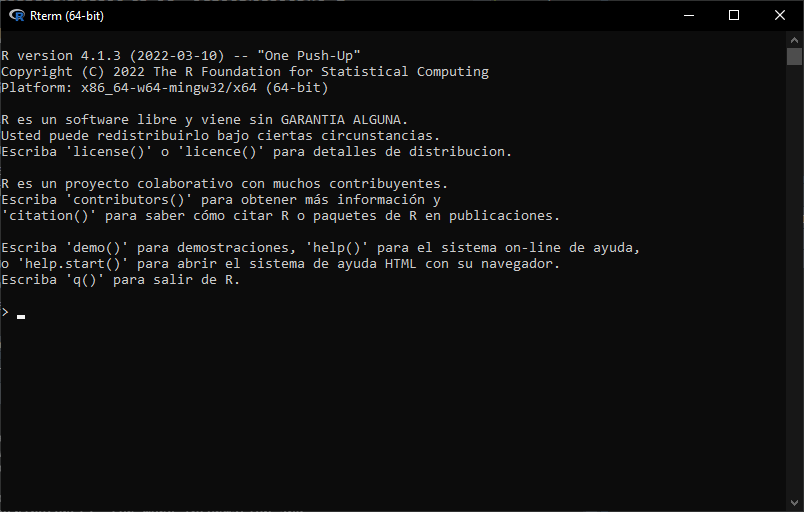
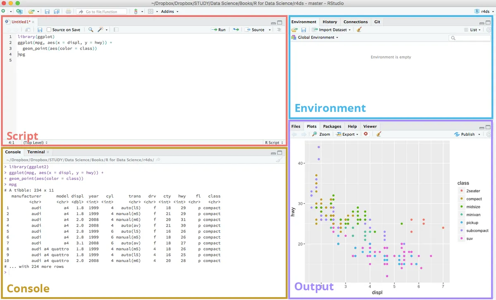

4 + 4[1] 8Como bien lo describe su página web, R es un lenguaje desarrollado para análisis matemático-estadístico. En 1995 evoluciona de su antecesor, el lenguaje de programación S, y comienza su expansión por el mundo académico, la cual hoy complementa con la ciencia de datos. Junto con Python, es el más usado dentro del rubro.1

Un lenguaje de programación interactúa con el usuario, generalmente, a través de una consola, en donde el usuario ingresa ciertas “ordenes” al lenguaje, y éste devuelve un resultado. El ejemplo más sencillo es si usáramos R como una calculadora.
4 + 4[1] 8Como puede apreciarse, yo envío una orden a R: que sume 2 + 2, y éste me devuelve el resultado. Además de esto, podría haber almacenado dicho resultado dentro de un objeto. Los objetos en R son básicamente elementos que guardan información que nosotros les depositamos dentro, y que tenemos que darles un nombre para luego referirnos a ellos. Por ejemplo, guardaré el resultado de esta suma dentro de un objeto que se llame “resultado_suma”.
resultado_suma <- 2 + 2Varias cosas: para empezar, puede apreciarse que para asignar un resultado a un objeto, debemos utilizar el “<-”, o asignador. Esto refiere a que básicamente todo lo que esté a la derecha del símbolo será almacenado en el objeto de la izquierda. Por otro lado, ¿por qué usé un guión bajo para nombrar a mi objeto? Es que R no permite espacios en nombres de objetos, tampoco tildes ni caracteres especiales fuera de los básicos como el guión bajo. Se recomienda sustituir los espacios por guiones o mayúsculas. Finalmente vemos que no ha devuelto nada la consola, eso es porque se ha guardado el valor correctamente, al almacenar valores la consola no devuelve ningún resultado, para acceder al mismo hay que llamar al objeto creado.
resultado_suma[1] 4Finalmente, los objetos en R también inteactúan entre ellos. Podemos generar distintos objetos y obtener resultados al generar su interacción. Por ejemplo, a continuación tomaré el objeto ya existente resultado_suma y le aplicaré una serie de interacciones.
Primero, veremos cómo R permite seguir interactuando con los objetos luego de haberlos creado.
resultado_suma + 10[1] 14Estas operaciones pueden almacenarse en un nuevo objeto o reescribir al anterior. Esto podríamos haberlo hecho si al nuevo objeto lo hubiéramos llamado resultado_suma. Esta acción habría eliminado el viejo objeto, siendo suplantado por el nuevo, con un distinto valor.
nuevo_objeto_suma <- resultado_suma + 10
nuevo_objeto_suma[1] 14Finalmente, se ve a los objetos interactuar entre ellos. El resultado podría haberse guardado en un nuevo objeto a su vez.
nuevo_objeto_suma - resultado_suma[1] 10Programar vinculándose tan solo con la consola puede ser un poco contra intuitivo. Felizmente hay herramientas que permiten hacerle la vida más fácil al analista. En R, sin dudas la más popular es RStudio.
RStudio es el IDE principal de R. Un IDE (Integrated Development Environment) es un programa pensado para desarrollar software. En este caso, como R es un lenguaje utilizado para el análisis de datos, está pensado específicamente para este fin.
Algunos IDE sirven para un lenguaje de programación específico, y otros aceptan varios. El más famoso es VSCode, de Microsoft, en donde también se puede usar R, pero no es tan popular dentro de la comunidad. RStudio admite varios lenguajes de programación además de R, entre ellos Python, JavaScript y Julia.
Finalmente, RStudio se está convirtiendo en posit.

RStudio tiene cuatro grandes secciones, tal como se muestra en la imagen previa. A continuación se detallarán:
Script: es el editor de texto dentro de RStudio, es donde se escriben los comandos que luego se enviarán a la consola para su ejecución. Permite al analista mantener ordenado y documentado todo lo que ha hecho en R y puede guardarse para luego o enviarse como cualquier documento. Es el principal socio del analista y puede trabajarse con varios a la vez. Por lo general, cuando abrimos RStudio no aparece, se debe abrir uno nuevo.
Consola: es donde R efectivamente trabaja y ejecuta los comandos que se le van enviando. Vendría a ser lo utilizado en el módulo anterior insertado dentro de una herramienta que permite más funciones.
Enviroment: es el listado de objetos que se van creando en R. En el caso de los ejemplos anteriores, aparecerían listados resultado_suma y nuevo objeto_suma. También aparecen los dataframes y las funciones creadas por el usuario.
Output: esta pestaña sirve para varias cuestiones. Para empezar, muestra los gráficos generados en R, tal como aparece en la imagen, pero también permite ver los archivos del proyecto de R, y los paquetes. También, cuando se requiera, aparecerá la documentación de ayuda de las funciones utilizadas.
En R se programa. Aprender a programar es un proceso de largo aliento, no es como una suite de bussines analytics como Power BI.2 Puede llevar meses sentirse a gusto con la programación. Lo fundamental es la práctica. Felizmente, no necesitamos ser expertos en programación para realizar análisis de datos.
Una librería es una serie de funciones que podemos descargar y utilizar para llevar a cabo nuestros propósitos en R (por ejemplo, importar un archivo con datos).
Y… qué es una función?
Una función es un bloque de código que permite que realice determinada acción.
mi_funcion <- function() {
print("Hola chiques!")
}mi_funcion()[1] "Hola chiques!"Los parámetros son valores que se sustituirán por aquellos que necesitemos al llamar a la función.
nombre_completo <- function(nombre, apellido) {
paste(nombre, apellido)
}Suelen tener nombres que explicitan lo que hacen.
nombre_completo("Homero", "Simpson")[1] "Homero Simpson"Ahora les toca a ustedes:
Cree una función que tome dos números y devuelva la suma de ambos.
Cree una función que tome tres valores:
Dos serán números
Y el tercero será la operación que querrá que ocurra entre los otros dos valores ingresados.
Debe poder: sumar, restar y multiplicar.
Debe realizar la operación solicitada y devolver el valor
Conviene googlear sobre condicionales en R ;)
suma <- function(numero_1, numero_2){
return(numero_1 + numero_2)
}
suma(250,50)
operacion <- function(numero_1, numero_2, operacion){
if (operacion == "sumar"){
return(numero_1 + numero_2)
} else if (operacion == "restar"){
return(numero_1 - numero_2)
} else if (operacion == "multiplicar"){
return(numero_1 * numero_2)
} else {
return("Error")
}
}
operacion(10,5, "sumar")
operacion(10,5, "restar")
operacion(10,5, "multiplicar")
operacion(10,5, "dividir")Para ver más sobre la relación de R y Python ir a este artículo.↩︎
Ver artículo: La santa trinidad del análisis de datos↩︎